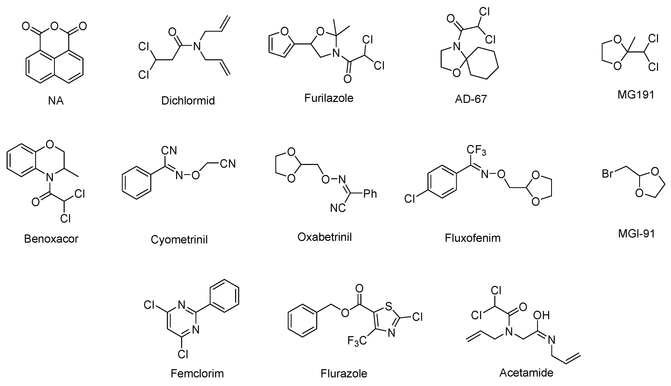
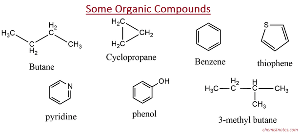
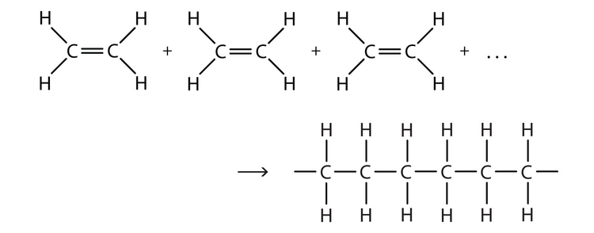
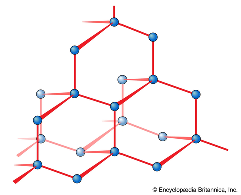

Molecular structure
| Vietnamese | NOUN9. Cấu trúc phân tử |
|---|---|
| English | Molecular structure |
| Pronunciation | /məˈlekjələr ˈstrʌktʃər/ |
| Word type | noun (as labelled in the PDFs) |
Topic 3 — Meaning (Vietnamese)
Sự sắp xếp và liên kết giữa các nguyên tử trong phân tử
Meaning (English)
The arrangement and connectivity of atoms within a molecule (Sự sắp xếp và liên kết giữa các nguyên tử trong phân tử)
Example
Even when two compounds have the same molecular formula, differences in molecular structure can lead to different properties. (Ngay cả khi hai hợp chất có cùng công thức phân tử, sự khác biệt về cấu trúc phân tử vẫn có thể dẫn đến những tính chất khác nhau.)
Images from the PDFs





